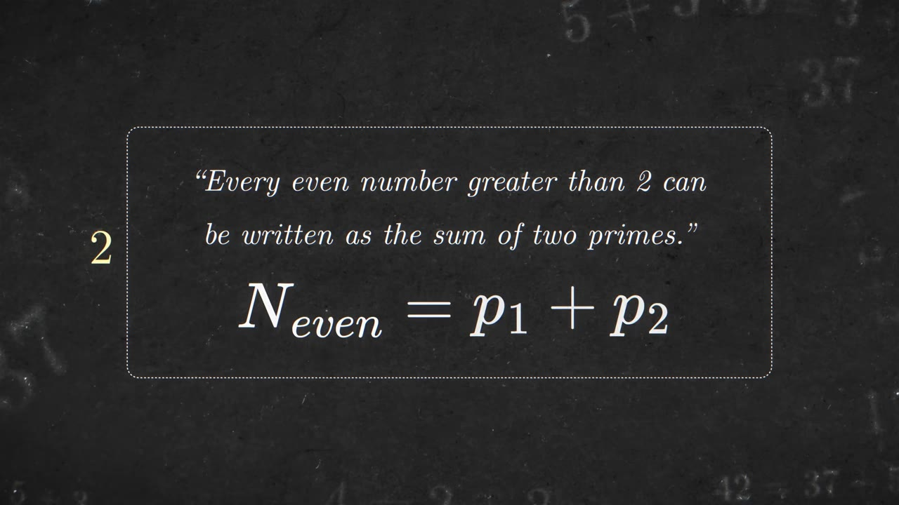
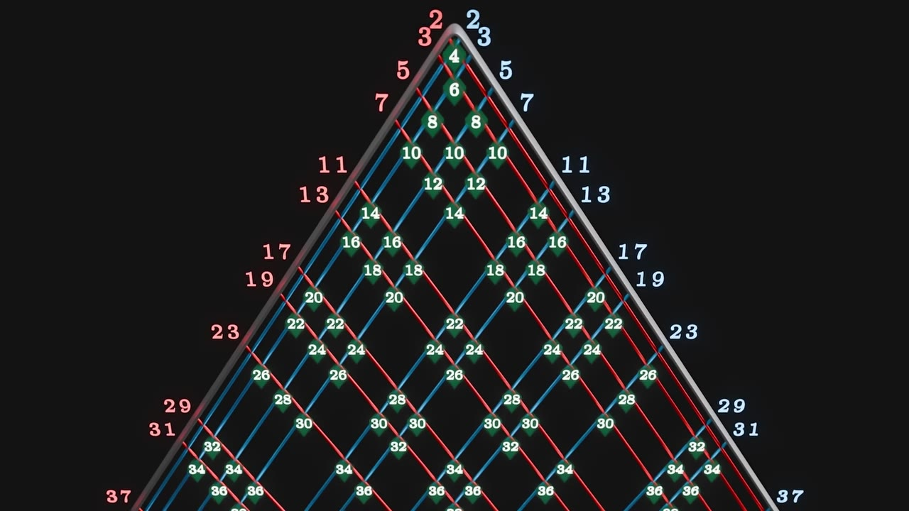
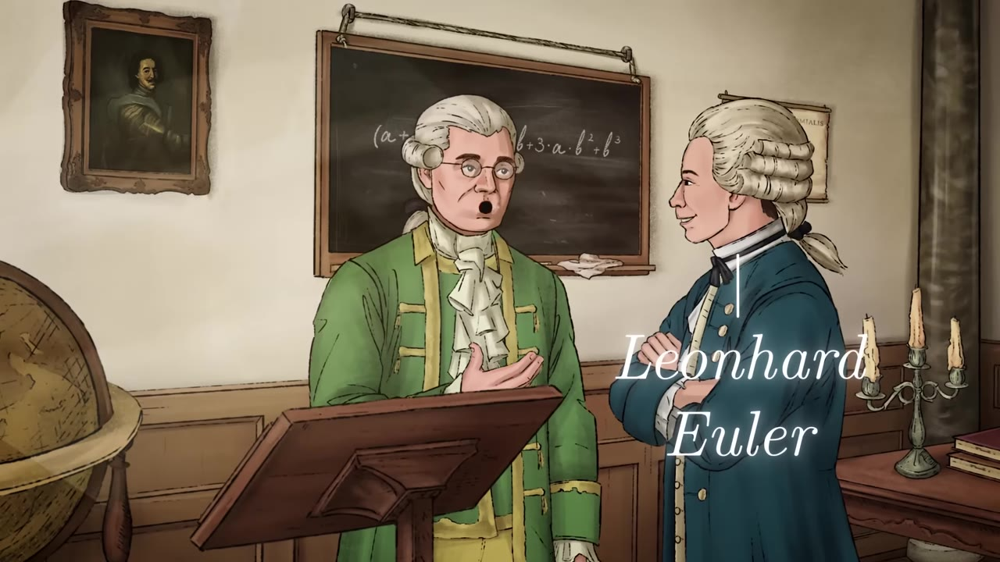
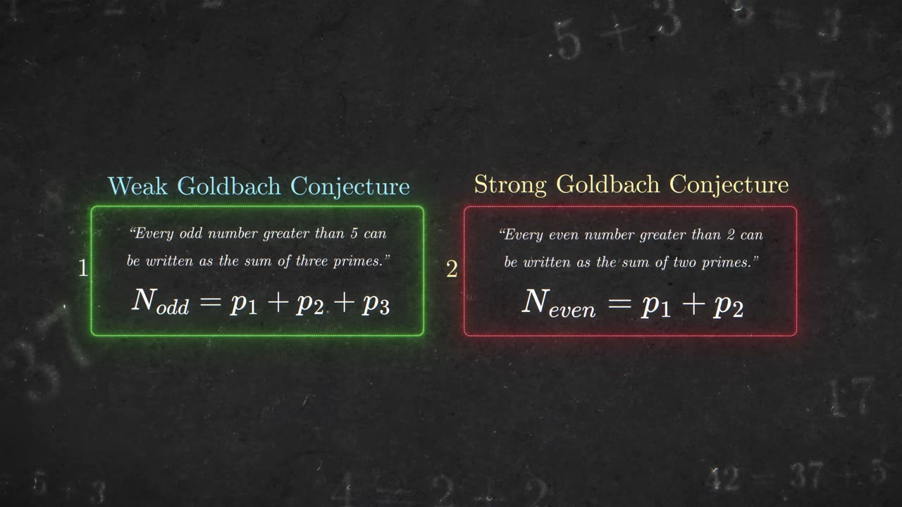
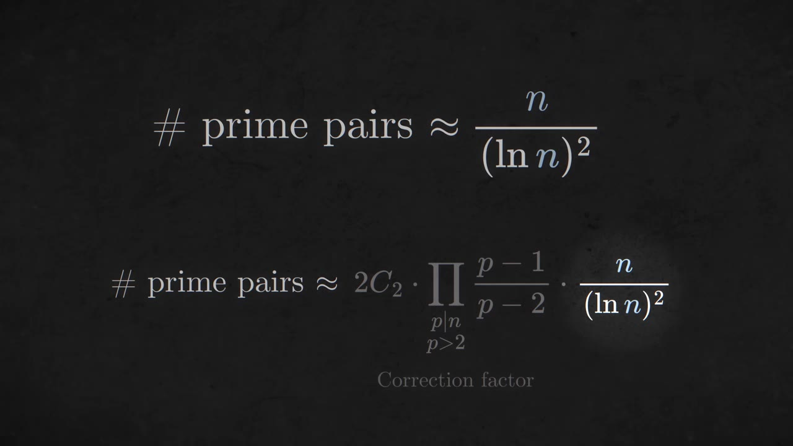
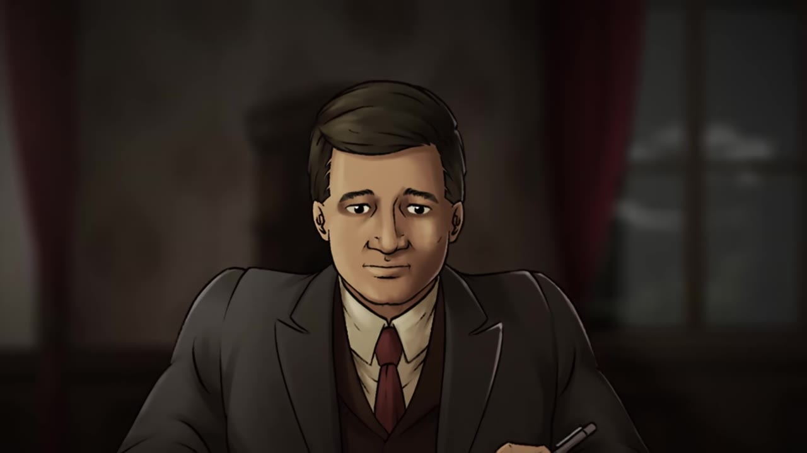
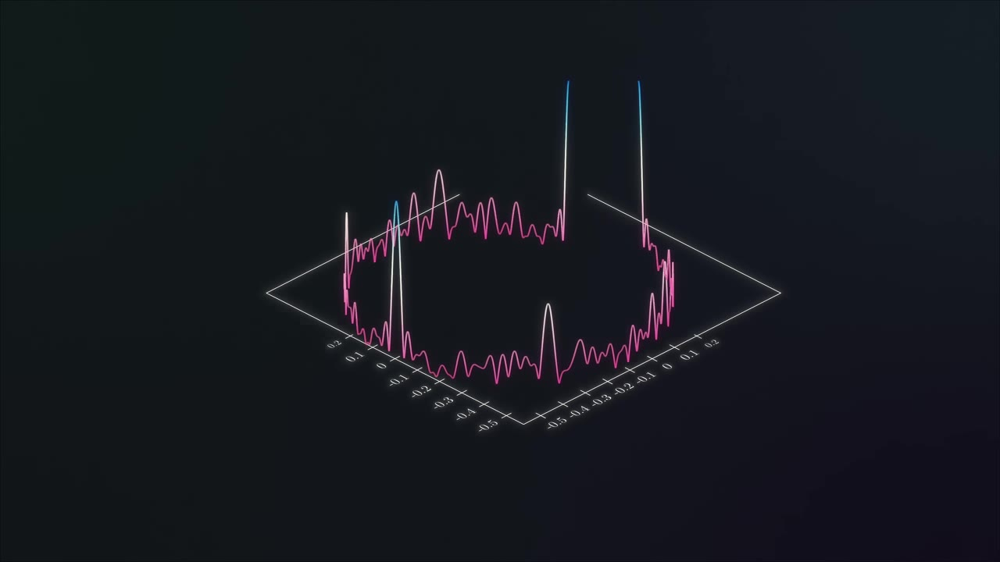
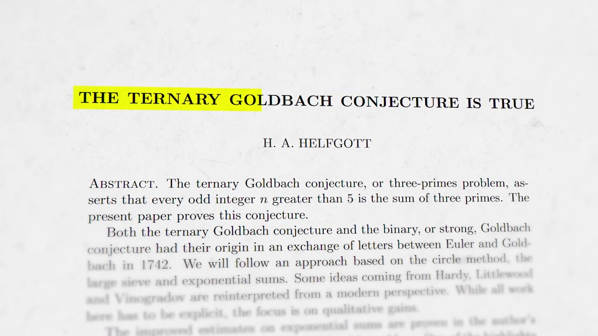
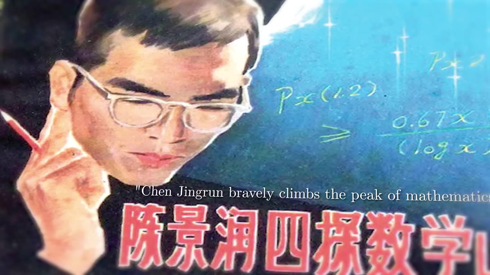
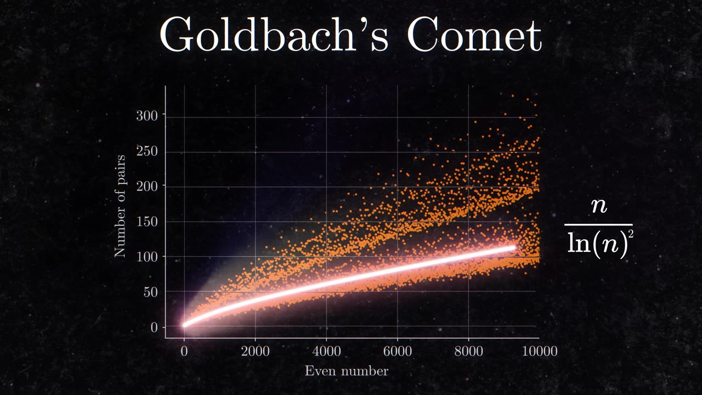

A claim a child can understand, that no one has proved in nearly 300 years — every even number above 2 is the sum of two primes. The story of who chased it, the machinery they built, and why the strong version still won't fall.
Watch on YouTubeThe whole conjecture fits in one line: every even number greater than 2 can be written as the sum of two primes. 6 is 3+3, 10 is 5+5 or 7+3, 42 is 37+5. It has resisted proof for nearly 300 years, and in 2000 a publisher attached a $1,000,000 prize to it.

A child can understand the statement, but the greatest geniuses in mathematical history have not been able to solve it.— Steven Strogatz
Write the primes down two diagonals — 2, 3, 5, 7… — then draw a line from each. Where two lines cross, you get the sum of those two primes. Read down the pyramid and every even number appears, and appears more and more often the further you go. The pattern looks inevitable. The conjecture is the claim that it never stops.

Christian Goldbach was a minor Prussian mathematician who spent 14 years traveling Europe to meet Leibniz, Bernoulli, and Newton before settling in St. Petersburg. There, in 1727, he met a 20-year-old Leonhard Euler. They wrote letters for 35 years. On 7 June 1742, Goldbach scribbled in the margin that every integer greater than 2 seemed to be a sum of three primes.

Euler sharpened the idea into two conjectures. The weak one: every odd number greater than 5 is a sum of three primes. The strong one: every even number greater than 2 is a sum of two primes. Prove the strong form and the weak follows — add 3 to every even sum to reach the odds. It doesn't work the other way. Euler couldn't prove either, and for 150 years almost nobody made progress, until Hilbert put it on his 1900 list of 23 problems for the new century (number 8, on primes).

I regard this as a completely certain theorem, although I cannot prove it.— Euler, on the conjecture
Mathematicians changed the question: not whether an even number is a sum of two primes, but in how many ways — call it H(N). In 1923 G. H. Hardy and John Littlewood used the prime number theorem (a number near N is prime with chance about 1/ln N) to estimate it. Split a big even number 2N down the middle, multiply the chances both halves are prime, sum over all pairs, and you get roughly N/(ln N)². It tracks the real counts beautifully — but, as they admitted, an estimate is not a proof.

In 1913 Hardy received a letter from an unknown clerk in India, Srinivasa Ramanujan — ten pages, over a hundred theorems, almost no proofs, some seemingly impossible (the sum of all positive integers equal to −1/12). Hardy brought him to Cambridge. Around 1917 they invented the circle method, which became the main attack on the weak Goldbach conjecture for the next hundred years.

On a scale from 0 to 100, maybe he's a 10. Littlewood is a 30. Ramanujan is an 80.— Steven Strogatz, on Hardy's scale
The circle method builds a counting machine out of an integral. Each prime becomes a clock spinning at its own rate; you add them tip to tail and sweep a slider α from 0 to 1. At most angles the clocks point every which way and cancel. But at simple fractions — 1/2, 1/3 — the remainders line up, the clocks interfere constructively, and the sum spikes. Wrap that picture around a circle: the spikes are the "major arcs," which give the main count; the flat regions are the "minor arcs," which give only an error term.

Sharp spikes at small rational α; they supply the main term that counts the prime triples.
The chaotic remainder; for the weak conjecture it stays small enough to be just an error term.
Hardy and Littlewood showed the weak conjecture held for large enough numbers — but only assuming the generalized Riemann hypothesis, and without saying how large. In 1937 Ivan Vinogradov dropped the Riemann assumption. A student later pinned a threshold: about 10 to the 6.8 million. It fell over the decades — 10^43,000 by 1989, 10^7,194, 10^1,346 by 2002 — still hopelessly large to check by computer. From 2005, Harald Helfgott pushed the constant down and (with David Platt) checked numbers up to 8.8×10³⁰, finally driving the bound below 10²⁷ in 2013. The weak conjecture was proved.

The strong conjecture is still open — for it the major arcs no longer dominate, so the circle method breaks and something new is needed. The closest anyone reached was Chen Jingrun, who in 1966 used sieve methods to prove every large enough even number is a prime plus either a prime or a semiprime. He did much of it persecuted during the Cultural Revolution, working by kerosene lamp, and published in 1973; China later made him a national hero. Computers have now checked every even number up to four quintillion. Plot the number of representations and you get "Goldbach's comet," hugging the old heuristic curve with no sign of a drop.


We do know what we love. So work on that.— Steven Strogatz